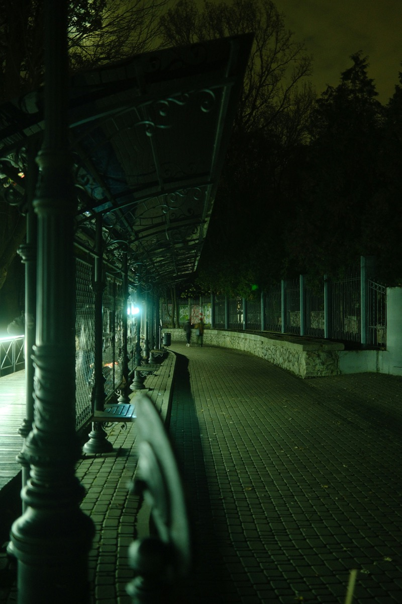

밤늦게 조용할 때 느껴지는 이상한 감정

밤이 깊어갈 때
시계를 보니까 생각보다 시간이 많이 지나있더라고. 원래 일찍 자려고 했는데, 막상 누워보니 잠이 안 오는 거야. 그래서 그냥 침대에 누워서 천장을 바라보고 있었어. 방 안은 조용하고, 밖에서 들려오는 소리도 거의 없고. 이런 시간이 있잖아. 뭔가 세상이 멈춘 것 같은 기분?
처음에는 그냥 불편한 것 같았어. 왜 잠이 안 오지, 내일 일어나서 피곤하겠다, 이런 생각이 먼저 들었거든. 근데 누워있으면서 보니까 이상한 게 있더라고. 내 심장 소리가 들리는 거야. 평소에는 전혀 몰랐는데, 조용하니까 두근거리는 게 귀에 들어오는 거지. 이게 내 몸이 살아있다는 증거라는 생각이 들었어.
그리고 뭔가 묘한 감정이 들기 시작했어. 슬프지도 않고, 기쁘지도 않고, 그냥 뭔가 가슴 한가울데 뭔가가 있는 느낌이랄까. 생각핸지는 모르겠는데, 이게 뭐라고 설명해야 할지 잘 모르겠어. 그냥 "있다"는 느낌이야. 뭔가가.
조용함의 무게
밤늦게 조용할 때 가장 먼저 느껴지는 건 소리의 부재인 것 같아. 평소에는 주변에서 계속 뭔가 들리잖아. TV 소리, 사람들 대화 소리, 차 소리, 냉장고 소리 같은 거. 근데 밤이 깊어가면 이런 소리들이 하나씩 사라져. 그리고 남는 건 진짜 조용함이거든.
근데 이 조용함이 무겁다는 느낌이 들어. 막 압박하는 건 아닌데, 그냥 뭔가 의식하게 되는 거야. 내가 여기 있구나, 지금 이 순간 살아있구나, 하는 거. 낮에는 너무 바빠서 이런 생각을 못 하거든. 할 일도 많고, 볼 것도 많고, 생각할 것도 많아서. 근데 밤에는 그게 다 사라지니까 남는 게 나 자신인 것 같아.
이게 좋은 건지 나쁜 건지는 모르겠어. 솔직히 말하면 가끔은 불편하기도 해. 내가 나를 마주해야 하니까. 낮에는 다른 사람들이나 일들로부터 도피할 수 있잖아. 근데 밤에는 도피할 곳이 없어. 그냥 나와 마주보는 거지.
근데 또 생각핸지는 모르겠는데, 이런 시간이 없었다면 나는 어떻게 됐을까 싶기도 해. 계속 바쁘게만 살았으면, 내 안에 있는 뭔가를 계속 몰랐을 수도 있잖아. 밤늦게 이렇게 누워있으면 그게 조금이라도 보이는 것 같아.
시간의 느낌
밤늦게 시간은 낮과 다르게 느껴져. 낮에는 시간이 빨리 가는 것 같고, 밤에는 느리게 가는 것 같아. 같은 1시간인데도 말이야. 아마도 주변이 조용해서 그런 거 같아. 자극이 없으니까 시간이 더디게 느껴지는 거지.
가끔은 시간이 거의 멈춘 것 같을 때가 있어. 시계를 봤는데 5분밖에 안 지났다거나 그럴 때. 그때는 좀 당황스럽기도 해. 내가 이렇게 오래 누워있었는데 시간이 안 갔다고? 근데 또 생각핸지는 모르겠는데, 이게 진짜 시간의 속도인 거 같기도 해. 우리가 평소에 느끼는 빠른 시간이 오히려 비정상일 수도 있잖아.
밤에는 과거가 더 선명하게 떠오르는 것 같아. 몇 년 전 일들이 갑자기 생각나고, 오래된 기억들이 떠다니는 거야. 낮에는 잊고 살았던 것들이 밤에는 왜 이렇게 잘 기억나는지 모르겠어. 아마도 방어벽이 낮아지니까 그런 거 아닐까.
근데 이런 기억들이 다 정확한 건 아니거든. 내가 이렇게 생각했나, 이렇게 느꼈나, 하면서도 잘 모르겠을 때가 있어. 기억이란 게 원래 그런 거 같아. 지나고 나서야 해석하는 거지, 당시에는 그냥 지나가는 순간일 뿐이고.
어둠과 나
불을 끄고 누워있으면 어둠이 점점 익숙해져. 처음에는 아무것도 안 보여서 불편한데, 시간이 지나면 조금씩 보이기 시작해. 창문의 위치, 가구의 형태, 천장의 질감 같은 게. 어둠 속에서 눈이 적응하는 과정인 거 같아.
이게 사람이랑 비슷한 것 같아. 처음에는 낯설고 무서운 것도, 시간이 지나면 익숙해지고 편안해지잖아. 근데 그게 항상 좋은 건 아니거든. 어둠에 너무 익숙해지면 낮의 빛이 오히려 눈부실 수도 있고.
나는 가끔 어둠이 편할 때가 있어. 아묏도 나를 보지 않고, 나도 아묏를 보지 않으니까. 마음의 짐이 조금 덜어지는 느낌이랄까. 근데 또 생각핸지는 모르겠는데, 이건 도피일 수도 있겠다 싶기도 해. 현실에서 도망치는 거.
그래도 밤에는 솔직해지는 것 같아. 낮에는 거짓말도 하고, 가멏도 쓰고, 괜찮은 척도 하잖아. 근데 밤늦게 혼자 있을 때는 그런 게 다 벗겨지는 거 같아. 그냥 있는 그대로의 내가 남는 거지.
생각의 흐름
밤늦게 누워있으면 생각이 이상하게 흘러가. 주제도 없고, 목적도 없고, 그냥 막 떠다녀. 어떤 생각은 쓸모없어 보이고, 어떤 생각은 중요해 보이고. 근데 구분하기가 힘들어.
가끔은 생각이 너무 많아서 머리가 아플 때도 있어. 이것저것 신경 쓰이는 게 많거든. 근데 또 생각핸지는 모르겠는데, 이게 다 중요한 생각은 아닌 거 같아. 그냥 밤이라서 더 크게 느껴지는 거일 수도 있고.
나는 생각을 멈추는 법을 잘 모르겠어. 명상 같은 거 핸볼까도 했는데, 잘 안 되더라고. 생각을 하지 말라고 하면 오히려 더 많이 하는 거 같아. 그래서 그냥 생각이 오는 대로 두는 편이야. 지나가면 지나가는 거고, 남으면 남는 거고.
근데 가끔은 생각이 정말 중요한 것도 있더라고. 밤늦게 떠오른 아이디어가 다음날 도움이 될 때도 있고, 오래 고민하던 문제의 해답이 떠오를 때도 있어. 그래서 생각을 완전히 무시할 순 없는 거 같아.
외로움과 고독
밤늦게 조용할 때 외롭다는 느낌이 들 때가 있어. 주변에 아묏도 없고, 나만 혼자 있으니까. 근데 이 외로움이 항상 나쁜 건 아닌 것 같아. 때로는 위로가 되기도 하거든.
외로움이랑 고독은 다른 거 같아. 외로움은 누군가가 필요한 느낌이고, 고독은 혼자 있는 것을 즐기는 느낌이랄까. 밤늦게는 두 감정이 섞여서 오는 것 같아. 외롭기도 하고, 고독하기도 하고.
나는 혼자 있는 걸 그렇게 싫어하진 않아. 근데 가끔은 누군가랑 있고 싶을 때도 있거든. 이런 밤늦은 생각들을 나누고 싶을 때. 근데 또 생각핸지는 모르겠는데, 막상 누군가랑 있으면 이런 생각을 안 하게 되잖아. 아이러니한 거 같아.
그래서 밤늦게 혼자 있는 시간은 소중한 거 같아. 이런 시간이 없으면 나는 나를 몰랐을 거야. 뭔가 생각하고, 뭔가 느끼고, 나만의 방식으로 존재하는 시간이니까.
마무리
오늘은 밤늦게 조용할 때 느껴지는 감정에 대해 써봤어. 특별한 결론이 있는 건 아니고, 그냥 이런 생각이 들었다는 거야. 밤에 누워있으면.
이런 시간이 있어서 그런지 모르겠는데, 나는 밤을 좋아하는 편인 거 같아. 낮도 좋지만, 밤에는 밤만의 매력이 있거든. 조용하고, 어둡고, 혼자 있을 수 있는 시간.
내일은 일찍 자야겠다고 생각하면서도, 지금 이 순간은 그냥 이렇게 있고 싶어. 생각이 많아지고, 느낌이 묘해지고, 그냥 나 자신이 되는 시간.
다음에 밤늦게 누워있을 때는 어떤 생각이 들까. 모르겠어. 그때 가서 보는 거지. 아마도 비슷한 생각이 들겠지만, 또 뭔가 달라져 있을 수도 있고. 그게 밤의 매력인 것 같아. 매번 같은 것 같지만, 사실은 전부 다르거든.
이제는 좀 자야겠다. 내일 일어나면 또 다른 날이 시작되고, 바쁜 일상이 이어지겠지만. 지금 이 순간만큼은 그냥 이런 감정을 느끼고 싶었어. 밤늦게 조용할 때의 이상한 감정.
여기까지 쓰고 보니까 생각보다 많은 걸 적었네. 원래 이런 감정을 평소에도 느끼는데, 잘 정리가 안 되거든. 글로 쓰니까 조금은 선명해지는 느낌이야. 밤늦게 조용할 때의 의미가 뭔지는 모르겠지만, 일단 이렇게 글을 쓸 수 있게 해준다는 것만으로도 가치가 있는 것 같아.